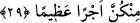
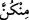

29. Eğer Allâh’ı, Peygamberini ve âhiret yurdunu diliyorsanız, bilin ki, Allah,
içinizden güzel davrananlar için büyük bir mükâfat hazırlamıştır.
“Eğer Allâh’ı, Peygamberini” yâni Peygamberini, O’nunla beraber olmayı ve O’nun
rızâsını istiyorsanız, demektir. Burada Allâh’ın zikredilmesi Rasûlullah (s.a.)’in Allah
Teâlâ nezdindeki yüceliğini bildirmek içindir. “Ve âhiret yurdunu” yâni yanında
dünyânın ve içindeki her şeyin hiçbir değeri olmadığı âhiret nîmetlerini “diliyorsanız,
bilin ki, Allah, içinizden güzel davrananlar için” bu iyiliklerine karşı künhü, mahiyeti
ve genişliği (sizin tarafınızdan) bilinmeyen, yanında dünyâ ve ziynetlerinin pek değersiz
kaldığı “büyük bir mükâfât hazırlamıştır.”
“
(içinizden)” ifadesindeki “ ” açıklama içindir. Çünkü Rasûlullah (s.a.)’in
eşlerinin hepsi muhsinedir/güzel davranan hanımlardır ve bütün âlemlerin hanımlarının
en sâliha olanlarıdır. Allah Teâlâ’nın “sizin için” değil de “içinizden güzel
davrananlar için” buyurması, ihsân ve iyiliğin tamamının Allah ve Rasûlü’nün rızâsını
kendi rızâlarına tercih etmekte olduğunu bildirmek içindir.
İşte daha önce zikredilen boşama bedellerinin salıvermeden önceye alınması ve
salıvermenin “güzel” diye vasfedilmesinin sırrı budur.
Bu âyet nâzil olunca Hz. Peygamber (s.a.) eşleri arasında en çok sevdiği Âişe
(r.a.)’dan başladı. Bu âyeti ona okudu ve kendisini muhayyer bıraktı. O da Allâh’ı ve
Rasûlü’nü tercih etti.
Rivâyete göre Rasûlullah (s.a.) Âişe (r.a.)’ya: “Sana bir şey söyleyeceğim, bu
konuda anne-babana danışıp istişâre etmeden aceleci davranmamanı arzu
ediyorum.”[199] buyurdu. Çünkü onun anne babasının kendisinden (a.s.) ayrılmayı
emretmeyeceğini biliyordu. Hz. Âişe: “O nedir, yâ Rasûlallah?” diye sordu. Rasûlullah
(s.a.) de ona bu âyeti okudu. Hz. Âişe validemiz: “Bu konuda anne-babamla istişâre mi
edeceğim? Bilakis ben Allâh’ı, Rasûlü’nü ve âhiret yurdunu tercih ediyorum.” dedi.
Rasûlullah (s.a.) bu sözü beğendi, mutlu oldu, mutluluk alâmeti mübârek yüzünde
göründü. Sonra Rasûlullah (s.a.)’in diğer bütün hanımları tercihlerini yaptılar. Onlar da
Rasûlullah (s.a.)’i ve bâkî olan âhiret nîmetlerini fânî olan dünyâ nîmetlerine tercih
edince, bundan dolayı Allah onlara lütufta bulundu; Hz. Peygamber (s.a.)’e onlardan
başkasıyla evlenmeyi yasakladı ve şöyle buyurdu: “Bundan sonra artık başka
kadınlarla evlenmen, elinin altında bulunan cariyeler hariç, güzellikleri hoşuna
gitse bile, bunların yerine başka hanımlar alman sana helâl değildir.” (el-Ahzâb,
33/52) Nitekim bu konu ileride gelecektir.
Rasûlullah (s.a.)’in eşlerini muhayyer bırakması konusunda ihtilaf edilmiştir. Bu
talak/boşama onların istemesiyle olacak şekilde talâk hakkını onlara bırakmak mıdır